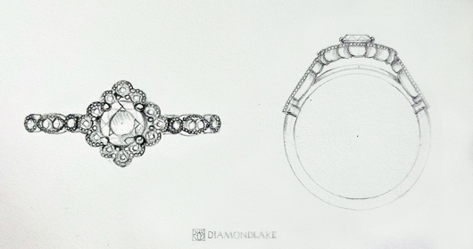

Изготовление
1 Эскиз
Создание ювелирного украшения начинается с идеи, которая в последствии реализуется в эскизе. На данном этапе определяются размеры и все основные характеристики изделия.
2 Моделирование
Дизайнер создает 3D модель и прорабатывает все основные параметры изделия. В итоге заказчик сможет увидеть будущее украшение во всех ракурсах.
3 Восковая модель
На специальном ЗD принтере выращивается восковая модель, которая будет служить основой для украшения при литье. Восковая копия полностью повторяет все формы и характеристики ЗD модели.
4 Литье
Восковую модель заливают гипсом и помещают в печь. Далее готовится специальный сплав из золота и заливается в гипсовую форму, после чего ей дают остыть, разбивают и извлекают заготовку изделия.
5 Первичная обработка
Следующий этап включает в себя: галтовку (очищение изделия от гипса), монтировку (сборка изделия из нескольких частей) и первичную полировку.
6 Опробование
После первичной обработки, изделие передается в российскую государственную пробирную палату, где изделие проходит ряд анализов на соответствие пробы.
7 Финишная обработка
Поступив обратно к ювелиру, изделие проходит закрепку камней, нанесение гравировки, финишную полировку и нанесение гальванического покрытия.

8 Упаковка
После всех этапов изготовления, на украшение вешается бирка со всеми характеристиками и помещается в индивидуальную упаковку.